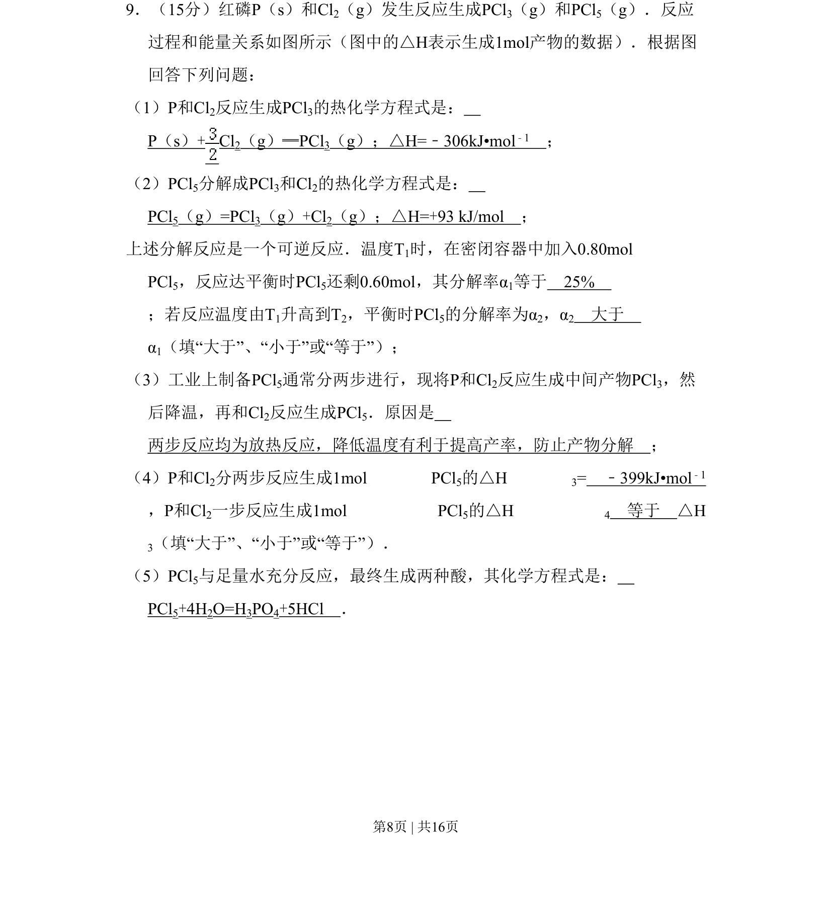
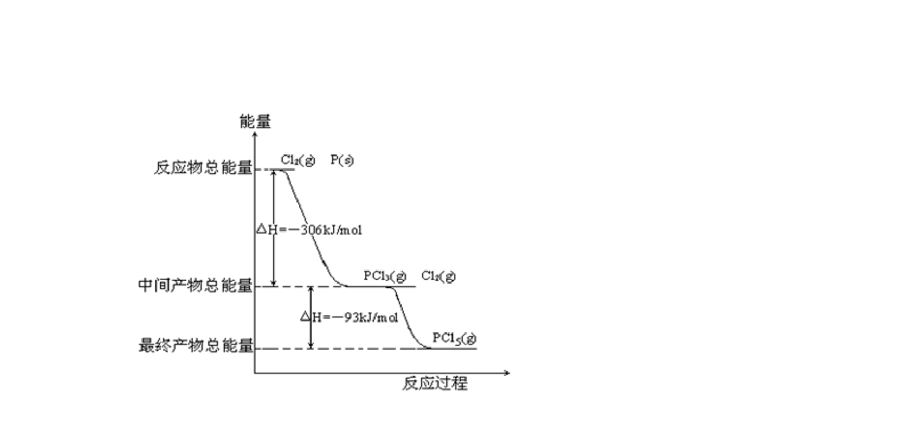
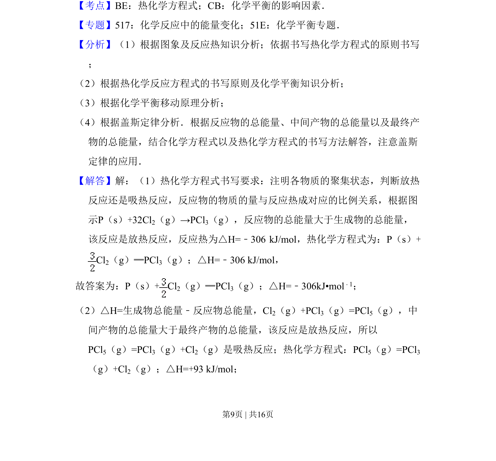
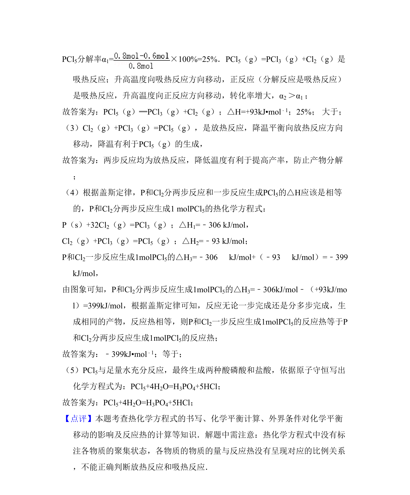

考点：热化学方程式 反应热 化学平衡 转化率


该题考查化学反应热效应、热化学方程式书写、可逆反应转化率计算及影响因素。


📄 原 PDF 第 8 页：
素材/真题/吉林/2008-2024·（吉林）化学高考真题/2008年高考化学试卷（全国卷Ⅱ）（解析卷）.pdf
9．（15分）红磷P（s）和Cl2（g）发生反应生成PCl3（g）和PCl5（g）．反应 过程和能量关系如图所示（图中的△H表示生成1mol产物的数据）．根据图 回答下列问题： （1）P和Cl2反应生成PCl3的热化学方程式是： P（s）+ Cl2（g）═PCl3（g）；△H=﹣306kJ•mol﹣1 ； （2）PCl5分解成PCl3和Cl2的热化学方程式是： PCl5（g）=PCl3（g）+Cl2（g）；△H=+93 kJ/mol ； 上述分解反应是一个可逆反应．温度T1时，在密闭容器中加入0.80mol PCl5，反应达平衡时PCl5还剩0.60mol，其分解率α1等于 25% ；若反应温度由T1升高到T2，平衡时PCl5的分解率为α2，α2 大于 α1（填“大于”、“小于”或“等于”）； （3）工业上制备PCl5通常分两步进行，现将P和Cl2反应生成中间产物PCl3，然 后降温，再和Cl2反应生成PCl5．原因是 两步反应均为放热反应，降低温度有利于提高产率，防止产物分解 ； （4）P和Cl2分两步反应生成1mol PCl 5的△H 3= ﹣399kJ•mol﹣1 ，P和Cl2一步反应生成1mol PCl 5的△H 4 等于 △H 3（填“大于”、“小于”或“等于”）． （5）PCl5与足量水充分反应，最终生成两种酸，其化学方程式是： PCl5+4H2O=H3PO4+5HCl ．